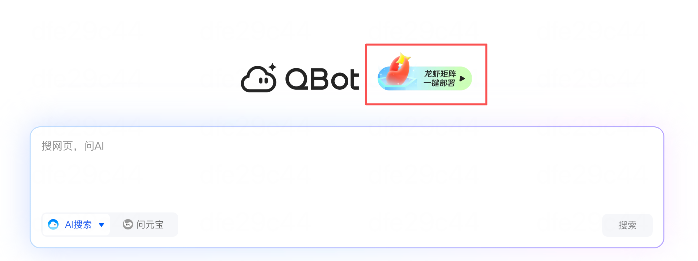

QBot 深度盘点：QQ 浏览器里藏着的 AI 能力到底有多强
QBot 不是一个独立 App，而是嵌在 QQ 浏览器里的 AI 平台。从 Agent 中心的场景化工具到 QBotClaw 的浏览器自动化，这篇把它的能力面完整铺开。
很多人对 QQ 浏览器的印象还停留在"手机上刷个网页"——直到 qbot官网 上线。
它不是一个独立的 AI 应用，而是直接嵌在浏览器壳里的一套 AI 能力矩阵：搜索框直接提问就能用，Agent 中心里挂着一堆现成的场景化 Agent，还有 QBotClaw 能让 AI 自己动手操作浏览器。这套组合拳打下来，QBot 其实已经远超"AI 搜索框"的范畴，更像一个随身 AI 助手平台。
这篇文章把 QBot 的能力面系统性地过一遍——从即开即用的轻量工具到可以闭环执行任务的自动化，再说说它的短板在哪里，最后给还在犹豫要不要用的人一个参考。
能力域一：Agent 中心 —— 场景化 Agent 随点随用
Agent 中心是 QBot 最直观的入口。打开首页往下滑就能看到一排 Agent 卡片，每一张对应一个具体场景——不需要你自己写 prompt，点开直接用。
目前能用到的 Agent 覆盖了几个高频需求面。AI 财经助理是其中信息密度最高的一个，输入"帮我分析腾讯控股"这类自然语言，它会结合基本面（财报、估值）、技术面（K 线、成交量）和消息面（近期新闻、公告）给出结构化的分析报告，还支持行业内多家公司的横向对比。当然它自己也反复强调——分析基于公开数据，不是投资建议，黑天鹅事件和未公开信息模型天然覆盖不到。
文档翻译 Agent 解决了一个很多人遇到过但懒得解决的小麻烦：PDF 和 Word 翻译完排版就乱。市面上的翻译工具要么翻完段落顺序全变，要么图片表格直接丢失。QBot 里的翻译 Agent 专门针对这个点做了优化，PDF 翻译后文字和图片的位置关系基本不动，Word 文档的字体、段落、表格格式也能保持原样。支持中英文双向和日、韩、法、德、西等主流语种互译，专业术语和文学翻译的质量还是得人工兜底，但日常商务文档拿来当初稿效率提升很明显。
高考 Agent、翻译 Agent、财经助理——qbot文档 里对每个 Agent 的用法和参数都有详细说明，Agent 中心的整体思路也很清楚：不做通用大模型的替代品，而是把高频场景封装成一键可用的工具。打开即用，不需要任何配置，这对不想跟 AI 反复调试 prompt 的人来说是很大的吸引力。

能力域二：QBotClaw —— 带着上下文干活的浏览器自动化
如果说 Agent 中心是"让 AI 帮你想"，QBotClaw 就是"让 AI 帮你做"。
传统自动化工具的痛点是无状态——每次执行指令都要把环境完整描述一遍：打开哪个页面、登录哪个账号、当前文件在哪。QBotClaw 的核心改进是内置了浏览器级别的上下文感知能力：它天然知道你当前在哪个标签页、页面上有什么内容、你登录了哪些账号、最近在处理什么文件。所以你说"把当前页面上这 5 个产品的价格整理成 Excel"，它不需要你额外拆解成"选文本 → 复制 → 打开 Excel → 粘贴 → 整理"这一串操作，直接就能闭环完成。
多轮对话也是上下文感知的延伸。第一次做出来的结果不满意，你可以说"换一种方式再做一遍"——它记得刚才做了什么，知道"换一种方式"指的是哪一层的变化，不需要从头交代。这比每次都重新写完整 prompt 省不少力气。
从产品定位上看，QBotClaw 瞄准的是"个人级浏览器自动化"——不是给开发者写脚本用的，而是让普通用户用自然语言就能让浏览器帮自己跑腿。收集竞品定价、批量整理网页数据、跨页面提取信息这类重复性操作，它的价值最直接。
短板也要说
QBot 的能力面虽然铺得开，但几个边界条件得提前知道。
首先，它的所有能力都跑在 QQ 浏览器里——这既是优势（不需要额外装 App，官方下载 就能拿到完整包）也是限制（浏览器内核的能力边界就是它的天花板）。如果你习惯用 Chrome 或 Safari，为了 QBot 专门切到 QQ 浏览器，迁移成本得自己掂量。
其次，Agent 中心的 Agent 目前数量不算多，覆盖的场景有限。财经、翻译、高考几个是高频刚需，但如果你的需求比较垂直——比如专业领域的文档处理、特定行业的数据采集——现成的 Agent 可能不够用，需要等后续迭代。
再者，AI 翻译、财经分析这类 Agent 的输出质量仍然有 AI 工具的通病：专业术语不准、文学翻译丢语感、黑天鹅事件无法覆盖。拿来当初稿或参考可以，直接作为最终交付物风险很大。
最后，QBotClaw 的自动化能力虽然方便，但涉及账号操作和敏感数据时还是要留个心眼——让 AI 代劳之前先确认清楚它要操作的页面和数据范围，别一股脑全交出去。
什么样的人该用它
梳理完能力和短板，QBot 适合的人群其实很清晰。
第一类是想让 AI 帮自己省时间但又不想折腾 prompt 的人。Agent 中心的场景化工具点开即用，不需要学习成本，翻译文档、查财经信息、问学习问题这类高频需求直接就能用。
第二类是有大量重复性浏览器操作的人。QBotClaw 的上下文感知在这类场景下价值最明显——收集竞品数据、批量整理网页信息、跨页面提取结构化内容，说一句话就能让浏览器自己跑完。
第三类是本来就用 QQ 浏览器作为主力浏览器的人。这部分用户几乎零迁移成本，首页就是 QBot，搜索框直接提问，Agent 中心随手点，相当于浏览器直接升级成了 AI 助手。
总结一下：QBot 不是一个要替代所有 AI 工具的大而全产品，而是在"浏览器 + AI"这个交叉点上找到了一个不错的切入——把场景化 Agent 和上下文感知自动化结合在一个你本来就会打开的 App 里。能力面够日常用，短板也都是可以预期的边界。要不要用，取决于你自己的浏览器习惯和日常需求里有没有它能帮上忙的场景。这套关于 QBot 的整理资料在 GitHub、Gitee 和 GitCode 都有备份，方便不同网络环境的读者查阅。